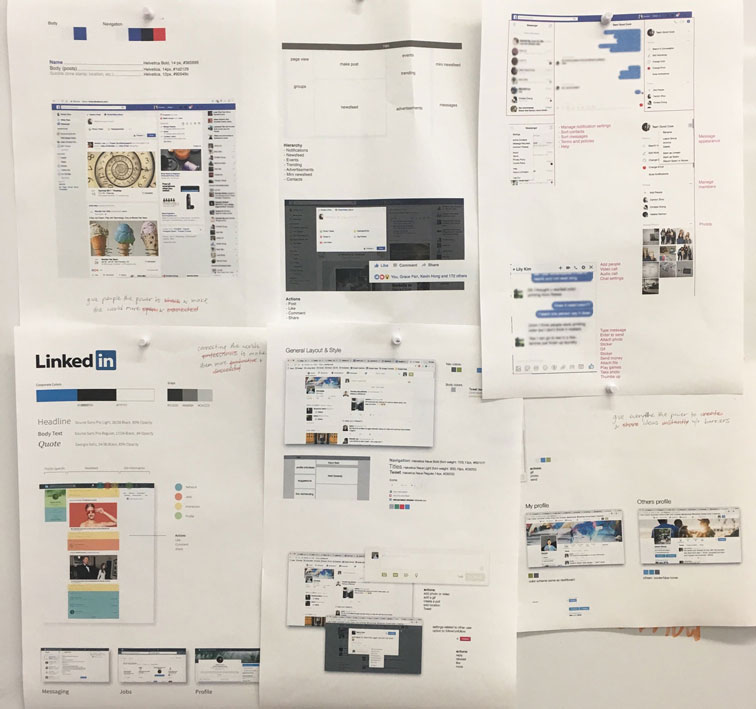
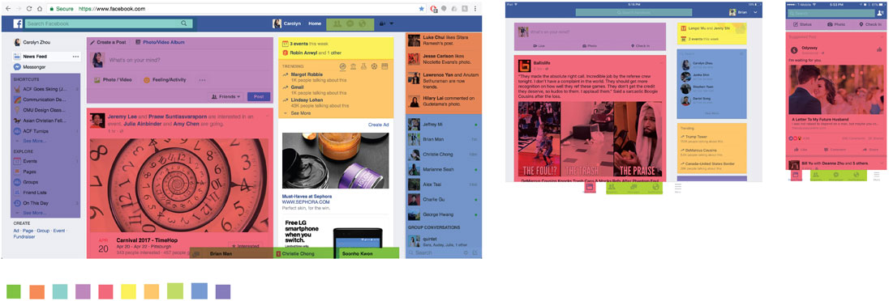
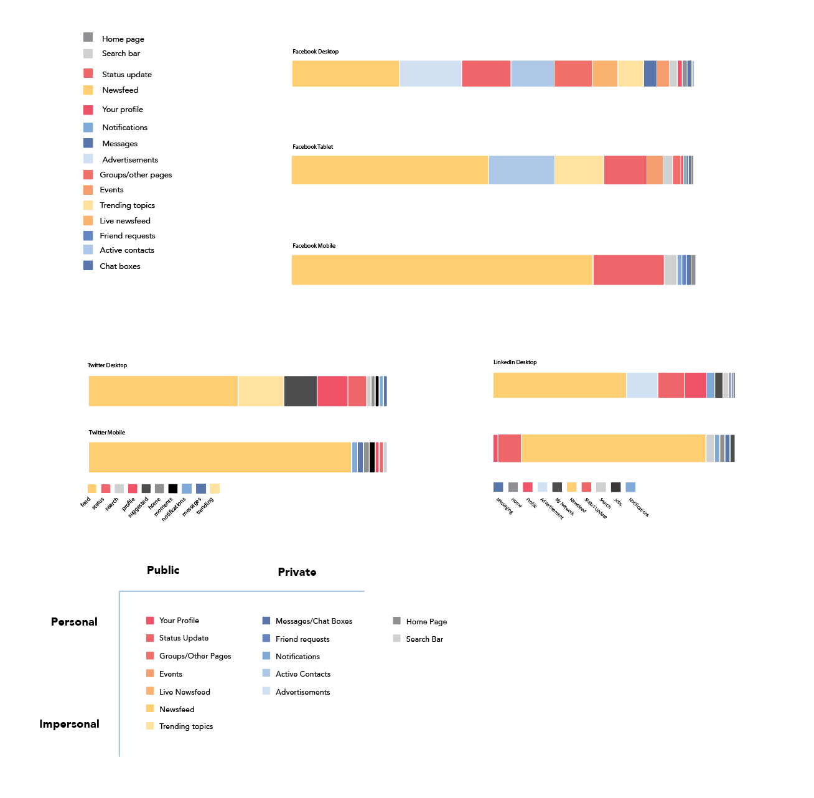
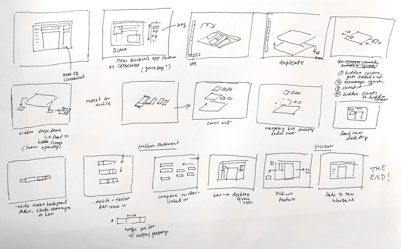

CZ
Gather, analyze, and visualize data about an interesting aspect of a social media platform.
An infographic poster and animation visualizing data about Facebook's use of screen space on desktop, tablet and mobile devices.
Team (3 designers) Natalie Harmon, Christie Chong, me
We gathered data on Facebook's screen real estate usage and focused our analysis on the newsfeed. In particular, we found it interesting that it is so prominent on Facebook's tablet and mobile apps, but takes a smaller percentage of space on the desktop site than those of Facebook's competitors. We visualized this analysis in an infographic poster, then animated the data and proposed a simple design intervention.
We began by identifying social media sites that we use: Facebook, Twitter, and LinkedIn, with a focus on Facebook. We studied their grid systems, layouts, typography, and content, but were most interested in how a site's use of screen real estate reinforces its company's mission. We wondered whether the limited space on smaller devices would reveal what these platforms valued most.
For each site, we looked at the home page and identified its distinct sections and features. We compared the amount of screen space those features took for each site's desktop and mobile (and tablet for Facebook) interfaces.
Below are a few of my explorations for communicating the data. We moved forward with bar charts because they best visualized the comparison of screen space used by various features.
From here, we sorted the features into common categories so we could more easily compare them across sites. However, we also retained unique features that were important to each site (i.e. networking for LinkedIn).
We decided to sort content into public vs. private (whether or not it involves interacting with others), and how personalized it is (i.e. ads are not very personal). We found that these aspects affect how much attention users will pay to something.
With the poster, we wanted to show how the number of features on screen gets reduced on tablet and on mobile—not removed, but moved elsewhere in the app. The app becomes "layered" with more pages as it takes more taps to reach non-essential things. We wrestled with visually communicating this idea.
In the video, we sought to use the same visual style to show how content resized and shifted to other pages on smaller devices.
The video explained 3 main things from the poster: the color coding, the layering concept, and the bar graph data.
To illustrate the implications of our analysis, we also mocked up Facebook's home page with fewer features and compared it to the original site. Our idea was to integrate sidebar content into the newsfeed or other pages, mimicking responsiveness in the app by using a simpler layout while retaining functionality. With less visual distraction, we hoped that users could focus better on activity in their newsfeed. The before and after: